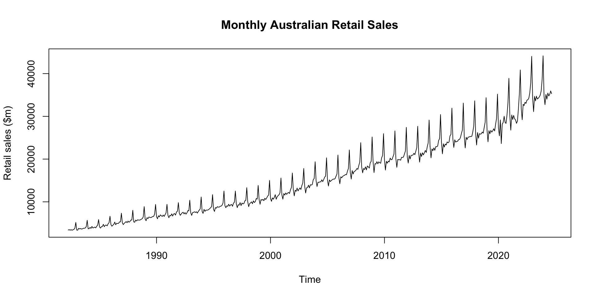
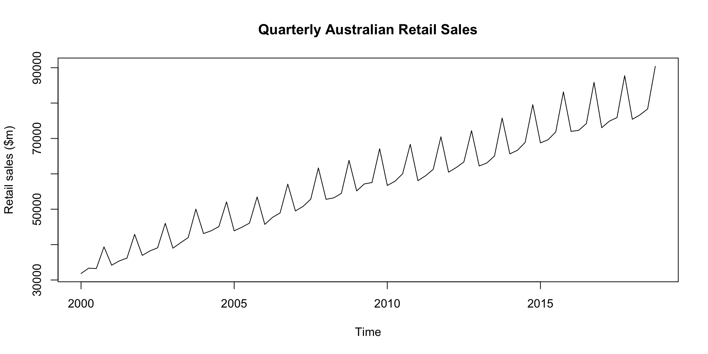
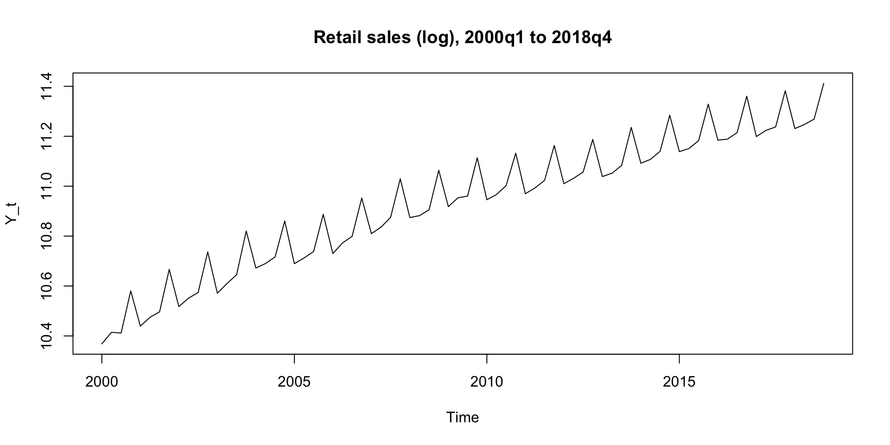
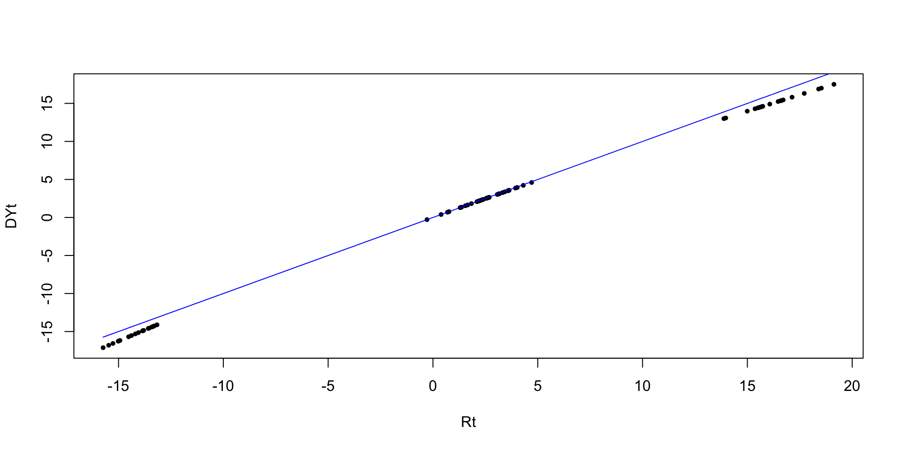

Conditions of Use
Help me help you
Please let me know if:
I really value and appreciate that!
kevin.chen10@unimelb.edu.auTutorials start in
| Day/Time | Location | Tutorial Code |
|---|---|---|
| Wednesday 1:00pm | The Spot-3014 | T01/06 |
| Wednesday 2:00pm | The Spot-3014 | T01/05 |
The software used for ECOM30004/90004 are R and RStudio, so these should be installed onto your computer as you will need them for completing tutorial tasks and assignments.
From Week 2 the tutorial will build on the lecture and self-directed activities from the previous week.
There will be a weekly homework submission following each tutorial, starting from Week 2.
Setting up the
To set up your working directory, enter command:
Alternatively, you can click on:
On my computer, it looks like:
To check your working directory, enter getwd() into your Console tab:
Your working directory is also displayed here (above the Console window):
If the folder looks correct, you can proceed to loading the datasets and files.
To execute a single line of code:
To clear Console window:
To recall the previous command(s) you have entered, press \(\boxed{\;\uparrow\;}\) in Console.
To obtain help:
Obtain the data file RetailSales.csv, and save it into an appropriate working directory. Read the data into an R dataframe. To get a sense of the variables in the dataframe, use the head() command to print out the first six rows of the dataframe.
Date Food Hhold Clothing DeptStores Other Restaurants Total
1 Apr-82 1162.6 592.3 359.9 460.1 479.1 342.4 3396.4
2 May-82 1150.9 629.6 386.6 502.6 486.1 342.1 3497.9
3 Jun-82 1160.0 607.4 350.5 443.8 467.5 328.7 3357.8
4 Jul-82 1206.4 632.4 359.3 459.1 491.1 338.5 3486.8
5 Aug-82 1152.5 622.6 325.2 438.4 485.7 331.5 3355.9
6 Sep-82 1189.1 622.0 346.3 465.1 489.9 341.9 3454.3We will focus on the time series of Total retail sales. Create a time series object for monthly total retail sales. Plot this time series.

Use aggregate to transform the monthly time series to quarterly frequency.
❓ What’s going on?
Jan Feb Mar Apr May Jun Jul Aug Sep
1982 3396.4 3497.9 3357.8 3486.8 3355.9 3454.3
1983 3384.5 3369.8 3805.3 3665.1 3760.0 3630.8 3686.5 3816.3 3823.4
1984 3698.5 3733.2 4010.9 3788.4 4242.3 3872.1 3978.0 4096.1 3901.4
1985 4130.0 3856.8 4196.9 4228.9 4739.1 4190.3 4514.6 4566.3 4380.3
1986 4674.9 4294.1 4528.0 4729.0 5261.9 4637.8 4989.5 4923.8 4962.2
1987 5065.3 4679.8 4993.0 5166.0 5386.3 5118.9 5494.6 5236.7 5395.1
1988 5304.4 5226.8 5729.7 5527.3 5787.8 5739.2 5722.7 5787.3 5946.3
1989 5980.3 5574.1 6299.0 6075.7 6437.8 6377.4 6287.5 6436.4 6565.5
1990 6511.6 6031.0 6749.3 6476.1 6947.9 6758.9 6573.5 6911.2 6589.3
1991 6837.2 6284.6 6837.9 6709.5 7191.7 6674.9 7147.0 7262.7 6898.1
1992 7305.3 6848.2 7164.6 7435.5 7551.4 7180.7 7487.0 7119.3 7406.0
1993 7455.9 6833.0 7497.4 7539.8 7675.2 7507.9 7674.2 7361.4 7765.5
1994 7730.6 7295.2 8240.1 7775.5 8061.2 8057.1 8076.6 8222.7 8410.6
1995 8268.3 7750.3 8656.9 8514.5 8860.4 8767.9 8762.1 8964.4 8996.2
1996 9084.7 8632.1 9074.2 8946.5 9435.2 9003.1 9291.1 9386.1 8956.8
1997 9516.5 8636.0 9325.0 9221.1 9819.1 9116.7 9719.3 9524.8 9596.6
1998 10042.7 8872.4 9575.7 9756.6 10000.6 9556.1 10225.4 9835.4 10059.8
1999 10537.1 9430.1 10540.0 10390.7 10581.0 10264.8 10824.9 10555.3 10908.9
2000 10794.2 10114.8 10930.1 10609.9 11052.7 11675.2 10605.2 11190.6 11447.4
2001 11612.2 10625.2 11940.5 11576.8 12075.8 11749.3 12038.9 12204.9 11949.3
2002 12836.0 11392.4 12728.5 12455.8 13217.9 12550.6 12943.3 13261.7 12888.3
2003 13636.3 12067.5 13289.7 13347.9 13897.3 13284.0 14005.4 13933.3 14055.9
2004 14934.7 13588.5 14600.9 14552.0 14685.1 14679.0 15154.9 14731.7 15204.1
2005 15066.7 13693.5 15128.9 14742.6 15000.6 15159.8 15339.3 15299.0 15436.0
2006 15614.7 14231.0 15868.7 15619.2 15959.0 16106.6 16214.5 16401.9 16348.7
2007 16855.2 15331.4 17317.7 16514.4 17100.4 17184.1 17437.0 17801.5 17603.5
2008 18201.0 16791.4 17807.9 17543.0 18183.5 17477.9 18391.2 18198.2 17885.2
2009 19384.5 16853.8 18927.9 18849.3 19397.5 18902.9 19360.6 19156.7 19030.3
2010 19792.0 17431.5 19490.3 19032.0 19533.6 19339.1 20231.6 19860.8 19916.3
2011 20063.7 18079.3 19933.8 19833.0 19888.1 19738.3 20419.6 20388.3 20475.9
2012 20529.6 19071.2 20868.1 20028.9 20873.1 20878.1 20964.6 21352.0 21040.2
2013 21510.6 19299.8 21410.5 20601.1 21481.0 20984.5 21474.2 22024.0 21551.9
2014 22960.6 20295.0 22386.2 21975.8 22620.1 22061.3 22917.2 22898.2 23057.2
2015 23924.6 21239.9 23584.2 22812.9 23532.6 23293.5 24015.9 23824.2 24008.9
2016 24753.1 22734.9 24517.3 23975.9 24143.5 24165.3 24563.7 24591.3 25063.6
2017 25306.2 22615.0 25113.5 24583.1 25133.2 25167.5 25278.6 25275.4 25348.7
2018 25896.0 23300.7 26218.0 24883.3 25954.1 25827.2 25935.6 26340.6 26063.9
2019 26748.0 24049.2 26660.6 25937.2 26708.0 26311.9 26603.4 27106.8 26586.5
2020 27321.3 25436.2 29167.9 23628.7 28194.7 28576.6 30020.7 28579.5 28349.8
2021 30108.5 26777.2 30336.0 29266.9 30216.8 29433.8 29172.7 28368.7 28901.7
2022 31862.0 29208.8 32830.9 32535.1 33287.1 33035.5 33800.0 33877.5 34276.8
2023 34338.4 31104.6 34675.4 33602.6 34724.2 34042.4 34263.0 34539.7 34981.9
2024 34734.9 32745.3 35136.7 34020.9 35455.4 34766.2 35169.4 35930.3 35311.2
Oct Nov Dec
1982 3551.5 3830.5 5179.7
1983 3878.7 4211.5 5684.3
1984 4274.0 4557.1 5847.5
1985 4857.7 5105.0 6628.2
1986 5305.1 5303.5 7340.0
1987 5744.4 5745.0 8022.4
1988 6065.8 6470.9 8885.8
1989 6605.4 7154.3 9394.4
1990 7002.9 7402.3 9414.4
1991 7624.4 7804.4 9813.7
1992 7946.1 7887.0 10379.6
1993 8063.3 8369.3 11130.8
1994 8638.4 8906.7 11684.1
1995 9214.9 9727.5 12525.0
1996 9675.6 9930.1 12523.5
1997 10237.0 10340.9 13318.2
1998 10773.4 10642.7 13837.5
1999 11336.8 11584.0 15016.9
2000 11664.4 12127.8 15567.3
2001 12797.9 13359.0 16743.5
2002 13798.9 14418.4 17801.4
2003 15188.7 15455.0 19384.4
2004 15769.1 16017.9 20298.1
2005 16002.8 16520.8 20955.0
2006 17155.7 17800.4 22142.8
2007 18530.4 19307.1 23833.7
2008 19144.5 19478.5 25184.3
2009 20294.6 20840.1 25958.5
2010 20575.4 21163.7 26599.2
2011 21183.4 21864.2 27425.4
2012 21850.4 22680.2 27676.4
2013 22853.7 23771.3 29137.6
2014 24332.7 24793.5 30425.9
2015 25447.3 25783.5 31923.0
2016 25974.6 26781.1 33100.2
2017 26397.1 27707.3 33639.0
2018 27407.7 28609.2 34361.4
2019 28147.1 29527.1 35210.2
2020 30340.0 33119.3 38903.2
2021 31709.1 35171.1 40863.3
2022 35496.2 37866.8 44046.3
2023 35946.9 38649.0 44158.6
2024 Qtr1 Qtr2 Qtr3 Qtr4
1982 10252.1 10297.0 12561.7
1983 10559.6 11055.9 11326.2 13774.5
1984 11442.6 11902.8 11975.5 14678.6
1985 12183.7 13158.3 13461.2 16590.9
1986 13497.0 14628.7 14875.5 17948.6
1987 14738.1 15671.2 16126.4 19511.8
1988 16260.9 17054.3 17456.3 21422.5
1989 17853.4 18890.9 19289.4 23154.1
1990 19291.9 20182.9 20074.0 23819.6
1991 19959.7 20576.1 21307.8 25242.5
1992 21318.1 22167.6 22012.3 26212.7
1993 21786.3 22722.9 22801.1 27563.4
1994 23265.9 23893.8 24709.9 29229.2
1995 24675.5 26142.8 26722.7 31467.4
1996 26791.0 27384.8 27634.0 32129.2
1997 27477.5 28156.9 28840.7 33896.1
1998 28490.8 29313.3 30120.6 35253.6
1999 30507.2 31236.5 32289.1 37937.7
2000 31839.1 33337.8 33243.2 39359.5
2001 34177.9 35401.9 36193.1 42900.4
2002 36956.9 38224.3 39093.3 46018.7
2003 38993.5 40529.2 41994.6 50028.1
2004 43124.1 43916.1 45090.7 52085.1
2005 43889.1 44903.0 46074.3 53478.6
2006 45714.4 47684.8 48965.1 57098.9
2007 49504.3 50798.9 52842.0 61671.2
2008 52800.3 53204.4 54474.6 63807.3
2009 55166.2 57149.7 57547.6 67093.2
2010 56713.8 57904.7 60008.7 68338.3
2011 58076.8 59459.4 61283.8 70473.0
2012 60468.9 61780.1 63356.8 72207.0
2013 62220.9 63066.6 65050.1 75762.6
2014 65641.8 66657.2 68872.6 79552.1
2015 68748.7 69639.0 71849.0 83153.8
2016 72005.3 72284.7 74218.6 85855.9
2017 73034.7 74883.8 75902.7 87743.4
2018 75414.7 76664.6 78340.1 90378.3
2019 77457.8 78957.1 80296.7 92884.4
2020 81925.4 80400.0 86950.0 102362.5
2021 87221.7 88917.5 86443.1 107743.5
2022 93901.7 98857.7 101954.3 117409.3
2023 100118.4 102369.2 103784.6 118754.5
2024 102616.9 104242.5 106410.9 aggregate generates a new series, Retail_q, by summing up the monthly observations of each quarter.
Create a window of this quarterly time series from 2000q1 to 2018q4, and produce a time series plot.

Take the log of the quarterly time series and produce a plot.

Denote the log retail sales time series as \(Y_{t}\). Create the first difference time series \[\Delta Y_{t}=Y_{t}-Y_{t-1}\] Print out the first six values of \(Y_{t}\) and \(\Delta Y_{t}\). What’s going on with the value of \(\Delta Y_{t}\) for 2000q1?
# First difference of quarterly log retail sales Y_t, convert to pct
D_Y_t <- diff(Y_t)*100
print(round(head(cbind(Y_t,D_Y_t)),4)) Y_t D_Y_t
2000 Q1 10.3685 NA
2000 Q2 10.4144 4.5997
2000 Q3 10.4116 -0.2842
2000 Q4 10.5805 16.8887
2001 Q1 10.4393 -14.1158
2001 Q2 10.4745 3.5186The first value in D_Y_t is missing (NA) because there is no value of Y_t available before 10.3685 to compute the difference. Taking a difference of a time series will necessarily result in a shorter time series because of this.
Denote the quarterly retail sales time series by \(S_{t}\). Create a time series of the quarterly percentage change (growth rate) of this time series, that is \[R_{t}=\frac{S_{t}-S_{t-1}}{S_{t-1}}\times 100\%.\] Compare the values of \(\Delta Y_{t}\) and \(R_{t}\).
Denote the quarterly retail sales time series by \(S_{t}\). Create a time series of the quarterly percentage change (growth rate) of this time series, that is \[R_{t}=\frac{S_{t}-S_{t-1}}{S_{t-1}}\times 100\%.\] Compare the values of \(\Delta Y_{t}\) and \(R_{t}\).
What does lag(S_t, -1) function do?
Denote the quarterly retail sales time series by \(S_{t}\). Create a time series of the quarterly percentage change (growth rate) of this time series, \(R_{t}=\frac{S_{t}-S_{t-1}}{S_{t-1}}\times 100\%\).
Compare the values of \(\Delta Y_{t}\) and \(R_{t}\).
The values of \(\log S_{t}-\log S_{t-1}\) and \(R_{t}=(S_{t}-S_{t-1})/S_{t-1}\) are quite similar especially for the smaller changes.
For the entire time series the two variables are very highly correlated:
The values of \(\log S_{t}-\log S_{t-1}\) and \(R_{t}=(S_{t}-S_{t-1})/S_{t-1}\) are quite similar especially for the smaller changes.
This is also evident in the plot shown below:

Thank you for coming!
Access Slides: pengyunc.github.io/TSAF_week1/